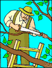

An arborist, tree surgeon, or (less commonly) arboriculturist, is a professional in the practice of arboriculture, which is the cultivation, management, and study of individual trees, shrubs, vines, and other perennial woody plants in dendrology and horticulture. Arborists generally focus on the health and safety of individual plants and trees, rather than managing forests (the domains of forestry and silviculture) or harvesting wood. An arborist's scope of work is therefore distinct from that of either a forester or a logger